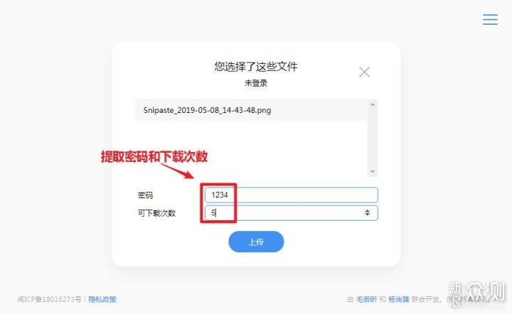

空投快传到底值不值得掏钱——一份付费决策账本
从高级流量机制到高级账号特权，按使用强度分三类人算账，帮你三秒决定要不要为空投快传花钱。
开头先抛问题：它到底值不值得掏钱？
我纠结了三个月。第一次用空投快传是同事给我传一个 8GB 的视频素材包，走服务器中转用了四十多分钟；后来某次传一个 12GB 的压缩包直接被拒——超过普通用户 10GB 上限。再后来我想手动切一个快点的服务器节点，发现这也是高级账号的特权。
它到底值不值得掏钱？ 这不是一个 yes/no 能回答的问题。得先把免费版和付费版的边界掰清楚，再对照你自己的使用强度算一笔时间账。
定价拆解：免费版给什么，付费版多什么
空投快传从 5.3.0 版本开始引入了"高级流量"机制，这也是它的付费体系核心。
这个工具的免费版图其实挺大，从官网能拿到全平台客户端（iOS/Android/桌面），airportalapp下载渠道也提供直接安装包，网页版、取件码收发、24 小时文件暂存，这些都不用花钱。真正的边界划在两个地方：
第一，大文件传输。 普通用户上传或下载 1GB 以下的文件完全免费、无限次；1GB 到 10GB 这个区间会消耗"高级流量"额度——具体额度帮助文档没说死，可能跟账号注册时间、活跃度有关。超过 10GB 的文件直接不支持，硬上限。
第二，服务器选择权。 空投快传在全国有十几个服务器节点（华北、华东、香港等），系统默认按地理位置自动选，但运营商互联互通的经典问题是"离得近不等于速度快"——北京联通用户连华北联通节点可能比连华北电信节点快得多，但免费版不能手动切，只能赌系统选得准。

高级账号的特权就围绕这两个边界展开：完全跳过高级流量限制（10GB 上限也一起取消，想传多大传多大）、手动切换服务器节点（实测找到最快线路）、还有一些可能airportalapp文档没列全的小优待（比如更长的文件暂存期？没确认）。
价格方面，应用内购买的模式，月付还是年付还是买断？样本文档没提具体数字，但按同类跨平台传输工具的行情，月付在十几到三十块之间，年付通常会更划算。
算账：分三类人各算各的时间账
轻度用户：每月传文件不超过三次、单次不超过 1GB
免费版够不够？完全够。
你可能只是偶尔给朋友发个照片、给同事转个 PDF、上传一个小压缩包。这些操作都不碰高级流量，10GB 上限也跟你没关系。系统自动选服务器通常也能覆盖——毕竟大部分人的网络环境跟"离得近就快"差不了太多。
有没有必要买？一分钱都别花。 空投快传免费版的功能对轻度用户来说已经过剩，买了也是浪费。
主力用户：每周传两三次文件，偶尔碰 1GB 以上
免费版勉强，但开始有痛感了。
你可能是设计师给甲方传方案、是学生传课程视频、是自媒体传素材包——这些场景偶尔会碰到 2GB、3GB 的文件，每次扣高级流量心里都在打鼓：我还剩多少？这次扣的是固定额度还是按大小线性扣？用完了这个月还能不能继续传？
还有运营商互联互通的问题——晚上 8 到 10 点上网高峰，系统自动选的节点可能特别挤，传个 500MB 的文件要等十多分钟。你想手动切个节点试试，但按钮是灰的。
付费后每单位时间成本多少？ 假设月付 20 块，一个月用四次，每次 5 块钱。省下的是：不用焦虑高级流量够不够（省心）、偶尔能手动切节点省十分钟（省时）、传大文件不用拆包压缩（省操作）。
值不值？看你那个"痛感"有多强烈。如果你已经在每次碰到大文件时习惯性地先压缩、拆包、算额度，那这 20 块是花钱消灾；如果你还能忍，就继续忍。

重度用户：每天都要传文件，经常碰 5GB 以上
闭眼买。
可能你是视频剪辑师、运维工程师、跨境电商运营——每天在不同设备、不同地区之间传大文件。空投快传的免费版对你来说就是个"阉割工具"：10GB 上限卡死了 4K 素材包和系统镜像文件，高级流量额度可能一周就用光了，系统自动选的服务器在高峰时段就是个摆设。
买了高级账号之后，这些障碍全部消失。上传 30GB 的视频素材不用拆包，高峰期传文件能手动切到非拥堵节点，甚至桌面客户端的 P2P 直传（免费版也有，但高级账号能和无限大文件叠加）在千兆局域网下能跑到 100MB/s，传完 10GB 只要两分钟。
每单位时间成本？按年付 200 块算，每天 5 毛。省下的是：拆包压缩的操作时间、等系统选对服务器的焦虑、大文件被拒后换工具的折腾——这些累计起来一天值不止 5 毛。
替代方案：不付这笔钱有什么别的路
同类免费工具
LocalSend 是最常被拿来对比的——同 Wi-Fi P2P 直传、跨平台、完全免费无内购。但它的缺点也很明显：必须在同一个局域网，跨城市跨地区的传输完全不行。如果你只在家里和办公室用，LocalSend 够用；但如果你需要跨地区传文件，LocalSend 帮不上忙。
还有各种网盘——夸克、百度云、OneDrive——但网盘的定位是"存储"不是"临时传输"：上传下载限速、免费空间有限、分享链接有效期短、还要考虑版权和安全问题。空投快传的核心优势就是"即发即取、24 小时自动删"，这个定位网盘不太好替代。
降低使用频率的代价
你也可以选择"能忍则忍"：大文件先压缩再传、分成多个小文件分别发、避开高峰时段、每月等高级流量自动重置。代价是效率和体验——本来五分钟能搞定的事可能要半小时，本来一次能传完的要发四五次。这些时间和精力的隐性成本，算一算可能比高级账号的钱还多。
桌面端 P2P 直传的特殊性
值得单独提一下——空投快传桌面客户端的 P2P 直传功能免费版也能用。只要两台设备在同一个局域网，自动切换到点对点传输，速度取决于局域网带宽（千兆网能跑 100MB/s），不走服务器也不扣任何流量。这个功能其实很能打——如果你大部分传输都在同一局域网内完成，那免费版 + 桌面端 P2P 已经覆盖了核心需求。
结论：哪类人闭眼付，哪类人再等等，哪类人永远不用付
闭眼付：每天都要传文件、经常碰 5GB 以上、对速度敏感的重度用户。高级账号对你来说不是"增值服务"，是"解除枷锁"。
再等等：每周传两三次、偶尔碰大文件的主力用户。先用免费版撑着，等到每次都要压缩拆包才算得清楚的时候再买——这个临界点因人而异，但你心里有数。
永远不用付：每月传不到三次、单次不超过 1GB 的轻度用户。或者你大部分传输都在同一局域网，用桌面端 P2P 直传就能搞定的场景。空投快传免费版的功能设计本来就是为你们准备的。
最后补一句：定价策略挺鸡贼的——高级流量机制给了免费版用户一个"看起来有额度、但额度又很暧昧"的模糊感，促使主力用户在不确定中选择付费。不过反过来想，如果免费版把所有限制都写得清清楚楚，可能很多主力用户反而会选择离开。这种"半透明"的付费转化设计，挺聪明的，但也确实让轻度用户体验到了完整功能——这一点，是它比很多"一刀切开"的付费工具做的好的地方。顺便说一句，这套资料的原始文档我在GitHub、Gitee、GitCode都留了一份，哪个访问顺畅就去哪个。